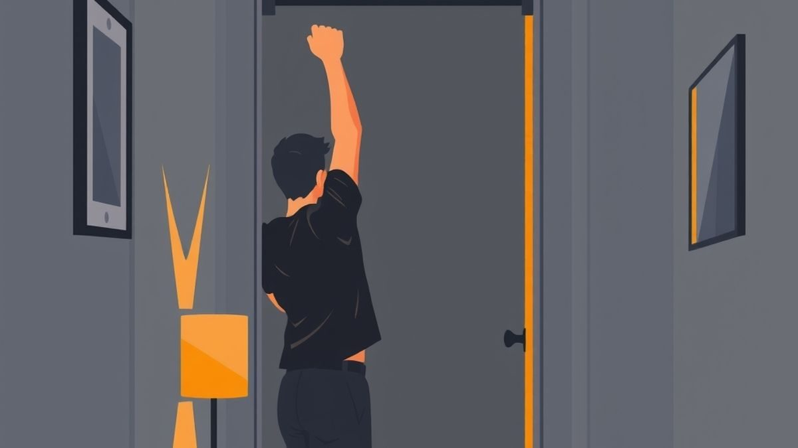
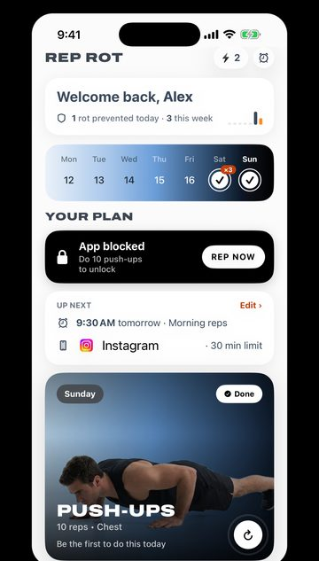

Grease the Groove: Get Stronger With Sets You Barely Notice
Grease the groove means small, easy sets spread through your day. How many reps, how often, what the research says, and a simple plan to start today.


TL;DR
- Grease the groove: do about half your max, 4 to 8 times a day, an hour or more apart, five or six days a week. Never go to failure.
- Pick one or two exercises. Pull-ups, push-ups and squats work well.
- No trial has tested the method directly, but research suggests frequent sets help by adding up total work, and that easy sets still build strength.
- It's great for getting better at a move, less so for building size.
- Attach sets to things you already do: the doorway, the kettle, your phone.
- Can't do one rep yet? Use the easier version. Check with a doctor first if you have an injury, a heart condition or are pregnant.
There's a pull-up bar in your doorway. You bought it in January. Right now it's holding a tote bag.
You walk under it maybe 30 times a day. Kitchen, bathroom, back to the couch. Every time, you think the same thing: I should really do a workout on that.
Here's the strange part. You don't need the workout. You need the 30 trips.
That's the idea behind grease the groove: instead of one hard session, you do a few easy reps of the same exercise many times a day, and you stop long before it gets hard. No sweat, no soreness, no warm-up playlist. Done right, you barely notice the sets. You do notice, after a few weeks, that the number you can do in one go has gone up.
Below is exactly how to do it: how many reps, how many sets, which exercises, what the research does and doesn't support, and what to do if your current number is zero.
What grease the groove actually means
The term comes from strength coach Pavel Tsatsouline, who popularized it in the 1999 book Power to the People! The pitch: strength is partly a skill. Practice a movement often, always with good form and never to exhaustion, and you get better at it, the way you get better at anything you practice.
Three rules make it grease the groove and not just "doing some reps":
- Small sets. About half of what you can do in one all-out set. If your max is 8 push-ups, a set is 4.
- Never to failure. Every set ends feeling easy. If a rep slows down or your form slips, that set was too big.
- Lots of sets, spread out. Several times a day, with an hour or more in between, most days of the week.
It's a cousin of exercise snacks, but the goal is different. Exercise snacks are short bursts meant to get you breathing hard. Greasing the groove should feel like nothing. You're practicing a lift, not chasing a heart rate.
How to grease the groove: your daily plan
Start with one test, then one rule.
The test: on a fresh day, do one set of your chosen exercise with clean form. Stop when your form breaks, not when you collapse. That number is your max.
The rule: each set is about half your max, rounded down. Do 4 to 8 of those sets across the day, at least an hour apart, five or six days a week. Retest every two weeks and resize your sets.
| Your max | Reps per set | Sets a day | Easier version |
|---|---|---|---|
| Pull-ups: 1–2 | 1 | 3–5 | A 10–20 second dead hang, or a slow lowering from the top (feet on a chair to get there) |
| Pull-ups: 3–8 | 1–4 | 4–6 | Stop a rep early on tired days |
| Pull-ups: 9+ | 4–6 | 4–8 | Fewer sets, same size |
| Push-ups: 0–5 from the floor | Half your max with hands on a counter | 4–6 | Hands on a wall |
| Push-ups: 6–20 | 3–10 | 4–8 | Hands on a bed or bench |
| Push-ups: 20+ | About half your max | 4–8 | Slow the lowering instead of adding reps |
| Bodyweight squats | About half your max, up to 15 | 4–8 | Sit down to a chair and stand back up |
That's not much per set, and that's the point. Five sets of 4 push-ups is 20 push-ups you didn't have to "work out" for. Over five days, that's 100.
Pick one or two moves, not five
The method works because the same movement gets a lot of practice. Spread it across six exercises and each one gets too little. Pick the one you most want to improve, and maybe a second that works different muscles. Pull-ups and squats, or push-ups and squats, are good pairs.
Form cues, quickly
- Pull-ups: start from a full hang, pull your shoulder blades down first, then pull until your chin clears the bar. Lower under control. No kicking or swinging.
- Push-ups: hands a little wider than your shoulders, body straight from head to heels, chest down until your elbows are around 90 degrees.
- Squats: feet about shoulder-width, sit your hips back and down, chest up, heels flat, only as deep as feels comfortable.

Does grease the groove work? What the research says
Honest answer first: we couldn't find a controlled trial that tested grease the groove itself, set for set, against a normal workout. The method comes from coaching practice, not from a lab. What research does exist points in a supportive direction, with caveats.
Training more often seems to work mainly by adding up more total work. A 2018 meta-analysis in Sports Medicine pooled strength-training studies and found that training more days a week was linked to bigger strength gains. But when studies matched the total amount of work, how often people trained no longer made a significant difference. In plain terms: frequency helps because it's an easy way to do more total reps. That's exactly what greasing the groove does. You'd never do 40 pull-ups in one session at a max of 8. Spread over a week of small sets, you might.
You don't need to go to failure to get stronger. A 2022 meta-analysis of 15 studies in the Journal of Sport and Health Science found no significant difference in strength gains between training to failure and stopping short of it. Every study was in young adults, and the authors called for more research in older and highly trained people, so it's not the last word. But it backs up the method's core rule: easy sets still count.
Strength work belongs in every week anyway. The Physical Activity Guidelines for Americans recommend muscle-strengthening activity on two or more days a week, covering the major muscle groups. Grease the groove can be how you get there, as long as you cover more than one muscle group over the week.
What the method is not good at: building a lot of muscle size. Muscle growth tends to need sets that get closer to hard, and grease the groove deliberately keeps them easy. If size is your main goal, use it alongside regular workouts, not instead of them.
The hard part is remembering
Nobody quits grease the groove because it's too difficult. They quit because by 4 p.m. they've done one set and forgotten the rest. The program lives or dies on cues.
So don't schedule your sets. Attach them to things you already do several times a day:
- The doorway. Every time you walk under the bar, one set. This is the classic version, and the reason doorway bars and this method go together.
- The kettle or coffee. A set of counter push-ups while the water heats.
- The bathroom trip. A set of squats on the way back.
- The phone. The thing you pick up dozens of times a day. If a set came before every scroll session, you'd hit your sets by lunch.
Keep a tally if it helps: a sticky note with a mark per set. If you miss a day, start again the next morning at the same set size. Consistency matters more than any single day, which is the whole argument in How to Stay Consistent With Working Out.
Safety: what can go wrong
- Check the bar. Doorway bars rely on the door frame. Follow the maker's instructions, give it a firm tug before you hang, and don't jump up to grab it. If the frame creaks or the trim shifts, stop using it there.
- Stop at the first sign of grinding. If reps feel harder than usual, your set is too big for today. Cut it.
- Watch your elbows and shoulders. High-frequency pulling is where aches tend to show up. Mild muscle soreness is fine. Joint pain, or pain that lasts more than a few days, means stop and get it checked.
- Take days off. One or two days a week with no sets of that move.
- Check with a doctor first if you have a heart condition or high blood pressure, a shoulder, elbow, wrist, knee or back injury, are pregnant, or haven't exercised in a long time. Start with the easiest version in the table.
Questions people ask
Can you grease the groove every day?
Most guides suggest five or six days a week rather than seven, and that's what we'd recommend. Because the sets are easy, many people do fine with daily practice, but a day off gives your joints a break and makes it easier to tell if something's off.
Does grease the groove build muscle?
Some, especially if you're new to strength training, but it's built for getting better at a movement, not for size. Pair it with a couple of harder sessions a week if that's your goal.
What if I can't do a single rep?
Grease the groove with an easier version. For push-ups, that's counter or wall push-ups; our 4-week first push-up plan walks through the steps. For pull-ups, short dead hangs and slow lowerings from the top (step up on a chair to get there) are a reasonable start. Same rules: small sets, never to failure.
How many sets a day is too many?
If you're sore the next day, your sets are too big or too frequent. For most people, 4 to 8 a day is plenty. More isn't better if it means worse reps.
Let your phone hand out the sets
You already pick up your phone more often than you pass any doorway. Rep Rot uses that. Set a limit on the apps you lose hours to, and when you hit it, they lock until you get up and do a set: push-ups, squats, sit-ups, pull-ups or a plank, counted by your iPhone's camera. Nothing is recorded or uploaded.

Set the rep count to your grease-the-groove number, not your max. It won't decide how often you reach for your phone, and Screen Time limits can be bypassed by someone determined. But it turns a habit you already have into sets you'd otherwise forget (more on making limits stick in How to Set App Limits on iPhone). Don't rot. Rep instead. Rep Rot has a free plan and a 7-day Pro trial, and it's in testing now: email help@reprotapp.com for early access.
Sources: Breaking Muscle, "Grease the groove training" (on the method's origin with Pavel Tsatsouline's Power to the People!, 1999); Grgic J, Schoenfeld BJ et al., "Effect of resistance training frequency on gains in muscular strength: a systematic review and meta-analysis", Sports Medicine (2018); Grgic J, Schoenfeld BJ, Orazem J, Sabol F, "Effects of resistance training performed to repetition failure or non-failure on muscular strength and hypertrophy: a systematic review and meta-analysis", Journal of Sport and Health Science (2022); Physical Activity Guidelines for Americans, 2nd edition (2018).